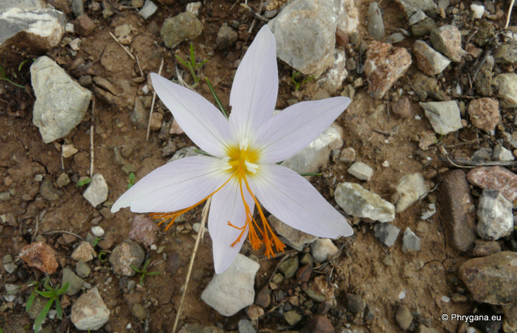
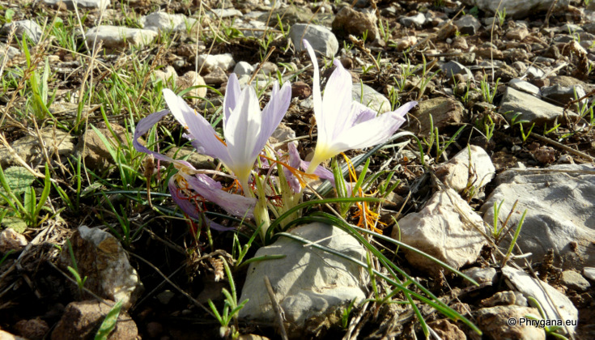
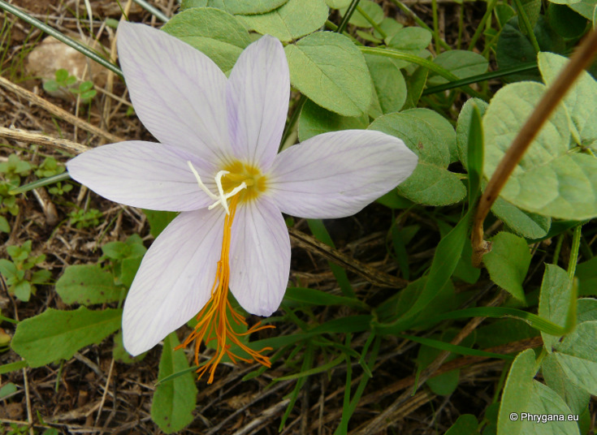
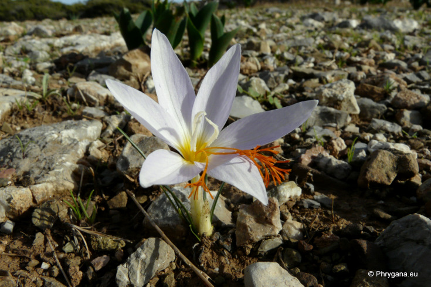
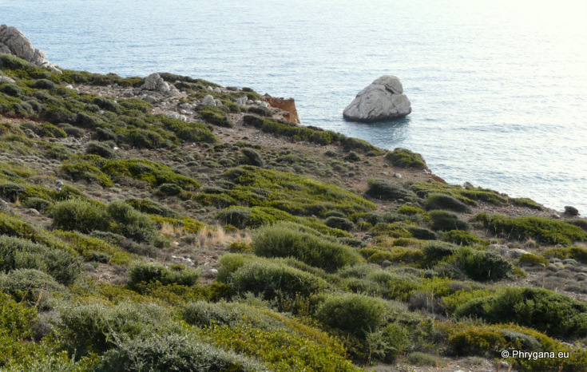

| PHRYGANA | Fauna | Flora | Galles | liste des espèces |
contact -
info - commentaires phrygana1 (at) gmail.com |
| Particularités crétoises | nouveautés | Mines | ressources naturelles |
| Crocus tournefortii J. GAY |
| 229 | Flora | IRIDACEAE | Crocus L. |
|
 Crocus tournefortii Louro (Agios Pavlos) 28 novembre 2010 |
| Feuilles: généralement 3 à 8 feuilles linéaires longues de 10 à 20 cm, larges de 1 à 3 mm, avec une bande centrale blanc verdâtre, présentes à la floraison | |
| Bulbe: tunique fibreuse à fibres verticales | |
| Fleurs: lilas clair à gorge jaune; parfois à veines marquées; tépales longs de 15 à 40 mm, obtus; étamines à anthères blanches et filets poilus jaunes; style saillant, très grand (4 à 12 cm), divisé en nombreuses branches orangées ou jaune orangé | |
| Hauteur: 5 - 14 cm | Type biologique: géophyte bulbeux |
| Floraison: octobre novembre (-décembre) | |
| Altitudes: 0 - 200 m | |
| Statut en Crète: indigène -- native | |
| Biotopes en Crète: phrygana, pieds de falaises | |
| Distribution: sud de la Grèce, Rhodes, îles Égéennes orientales | |
| Note: les fleurs restent ouvertes la nuit | |
|
 Crocus tournefortii Louro (Agios Pavlos) 28 novembre 2010 |
|
 Crocus tournefortii Louro (Agios Pavlos) 28 novembre 2010 |
|
 Crocus tournefortii Louro (Agios Pavlos) 28 novembre 2010 |
|
 Biotope de Crocus tournefortii Louro (Agios Pavlos) 28 novembre 2010 |
| 15 août 2012 |
| © paul fontaine -- © Phrygana.eu 2007 -- 2013 |